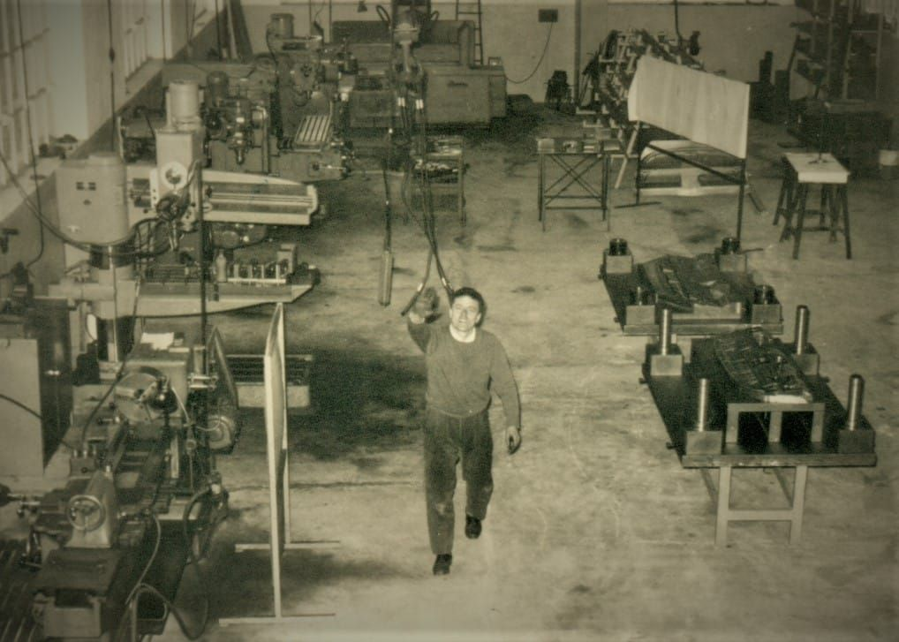
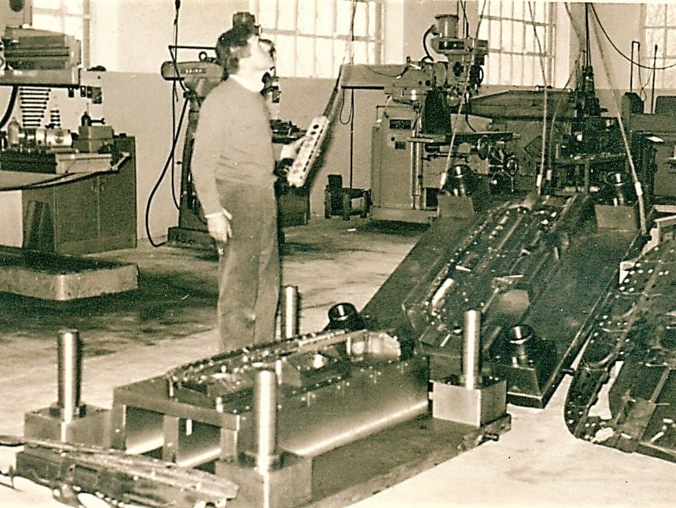
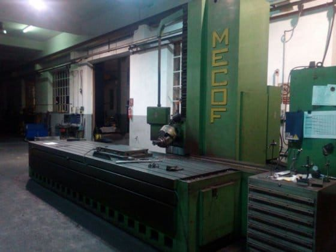
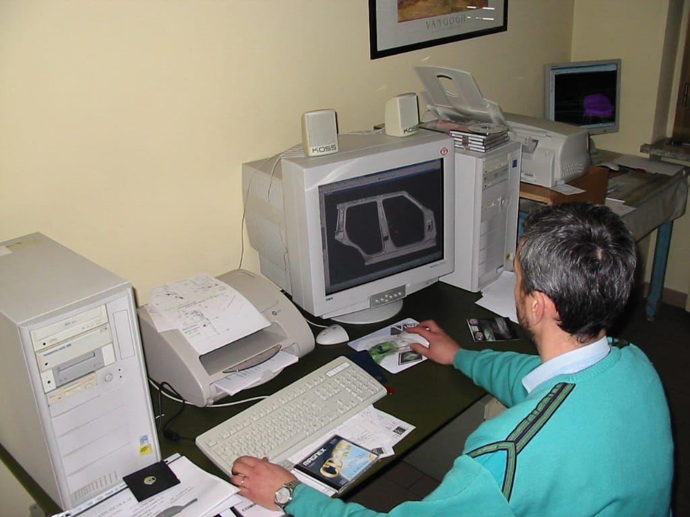
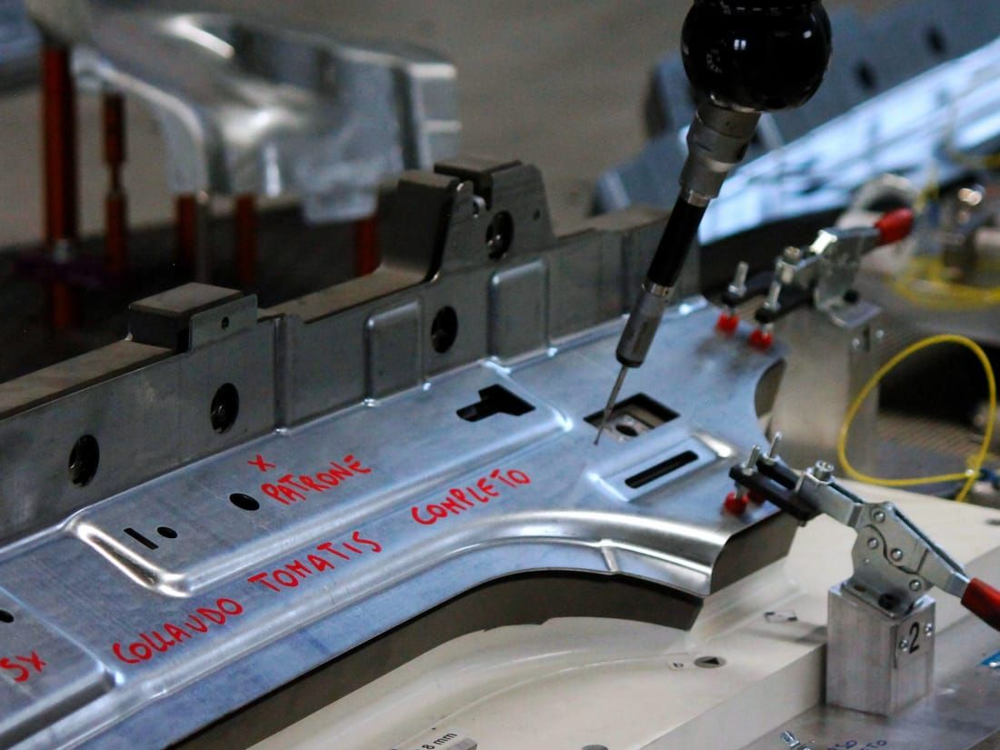
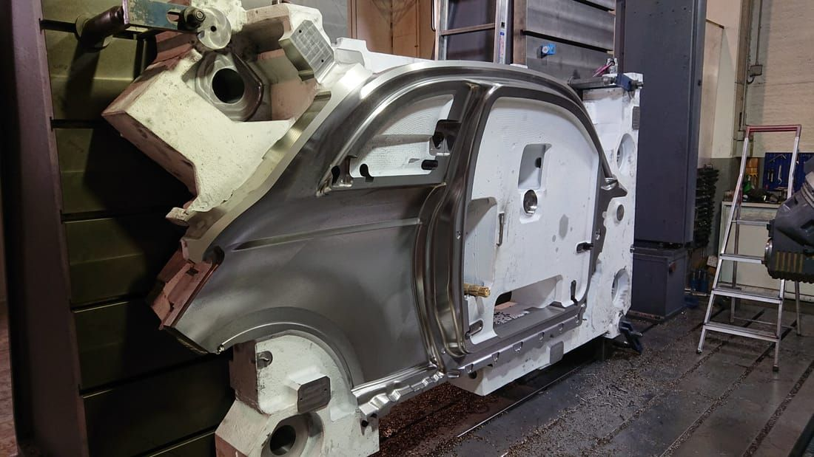
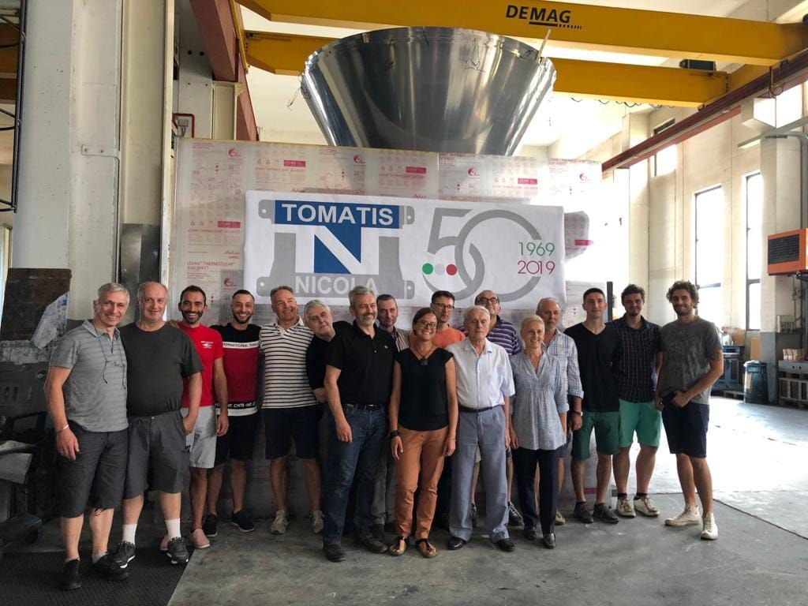
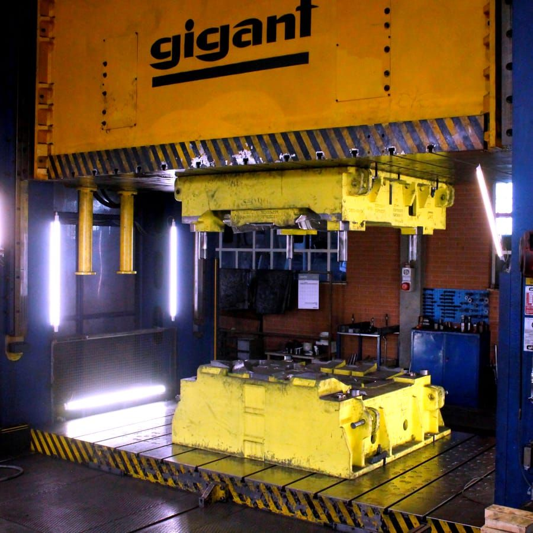

Tomatis Nicola S.r.l.
History
Over fifty years of growth, one vocation: precision.
-
1969

The company was founded in 1969 in the workshop built by its founder, Nicola Tomatis. On land inherited from his father Pietro, he built the first core of his mechanical workshop, specialising in cold-forming moulds for sheet metal. Over the years, this original core was expanded several times, reaching the current extension of over 2,000 sqm of covered surface. From a sole proprietorship, it became first a general partnership and, in 1990, an S.r.l., maintaining a family-run management and, today, a staff of sixteen people.
-
1975–77

First visualised automatic machines and a copy-milling machine. From the very beginning, Nicola aimed to keep the technological equipment constantly up to date, periodically investing in newly designed machinery. During these years, the first visualised automatic machines were purchased, along with a copy-milling machine that, using specific sensors, traced wood or resin models and, with a clutch system linked to the tools, milled the mould material directly.
-
1979–80

First expansion of the workshop. Over time, the need arose for larger spaces to meet growing client demand. A new programmable MECOF milling machine with positioner was installed in the new spaces, keeping pace with machining technology.
-
1985–92

Construction of the office building and installation of the first numerically controlled machines. New NC machines, with contact probes for digitising resin models. Purchase of the first CAD/CAM system, with which the technical office began moving design work from the traditional drafting table to PCs.
-
1997–98

Second expansion, with the installation of a metrology centre. This expansion provided larger spaces, equipped with a higher-capacity overhead crane and a first press for mould testing, opening the door to building medium-sized moulds.
-
2006–17

Expansion with the installation of the Gigant press and a 25-tonne overhead crane. New FPT Industry 4.0 milling machines. These further steps allowed the company to enter the large-mould market.
-
2019–20

Fifty years of activity.
-
2020–25

The five-year period from 2020 to 2025 was marked by significant challenges, first linked to the pandemic emergency and subsequently to the crisis affecting the automotive sector. Despite a particularly complex economic environment, the company was able to maintain high quality and production standards, ensuring operational continuity and reliability for its clients. During this period, strategic investments were made to strengthen production capacity, including the acquisition of a new MAZAK machining centre equipped with an automatic tool changer, which made it possible to increase the efficiency, precision and flexibility of machining operations.